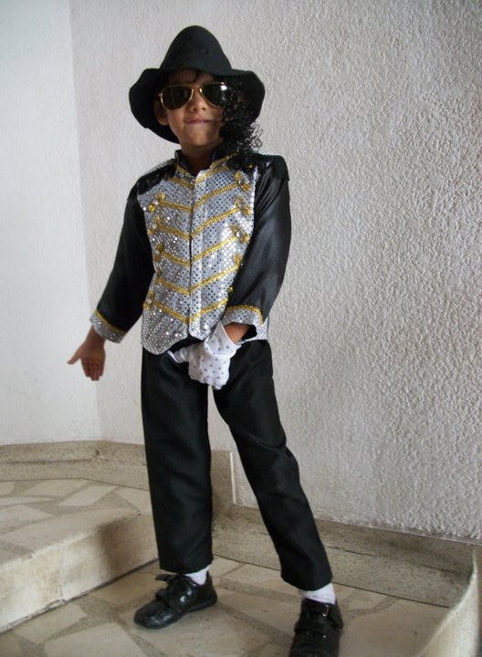

En un mundo donde los héroes eran forjados en el fuego de la adversidad, un joven llamado Yura se alzaba como un faro de esperanza. Desde su infancia en un pequeño pueblo, había demostrado un valor excepcional, enfrentándose a desafíos que muchos considerarían insuperables. Con el cabello al viento y una mirada decidida, Yura soñaba con convertirse en un guerrero legendario.
A medida que crecía, el destino le presentó su primera gran prueba. Un dragón aterrador había despertado de su largo letargo, asolando la región y dejando a su paso caos y destrucción. Los aldeanos, aterrorizados, miraban a su alrededor en busca de un héroe. Fue entonces cuando Yura, armado con su espada y un coraje inquebrantable, decidió enfrentarse a la bestia.
La batalla fue feroz. Las llamas del dragón iluminaban la noche mientras Yura esquivaba y atacaba con una agilidad impresionante. Cada golpe de su espada resonaba en el aire, y cada vez que la bestia rugía, su determinación crecía. Después de una lucha titánica, Yura logró asestar el golpe final, derribando al dragón y liberando a su pueblo del miedo. La victoria no solo lo consagró como un héroe, sino que también atrajo la atención de aquellos que lo habían subestimado.
Entre los admiradores se encontraba Lira, una joven guerrera de un reino vecino, conocida por su belleza y su destreza en el combate. Sus ojos brillaban como estrellas y su risa resonaba con una melodía que Yura no podía olvidar. Mientras la alabanza por su valentía crecía, también lo hacía su conexión con Lira. Juntos, compartían historias y sueños, y cada momento que pasaban juntos hacía que su vínculo se fortaleciera.
Sin embargo, la paz no duró. Un antiguo enemigo, el hechicero oscuro Malakar, había observado la victoria de Yura y estaba decidido a venganza. Con un ejército de sombras, Malakar lanzó un ataque contra el pueblo, sumiendo a todos en la desesperación. Una vez más, Yura se vio obligado a actuar. Reuniendo a sus aliados y liderando la carga, el joven guerrero luchó con una ferocidad que desbordaba su propio ser.
La batalla fue brutal. Las espadas chocaban, y las magias oscurecían el cielo. Yura, con cada golpe, inspiraba a sus compañeros a luchar con valentía. En el clímax de la lucha, se enfrentó a Malakar en un duelo que resonó como un trueno en la tormenta. Ambos guerreros se empujaban al límite, pero la determinación de Yura brillaba más intensamente.
Con un último esfuerzo, Yura canalizó todo su poder y lanzó un ataque devastador, desmantelando el oscuro hechizo de Malakar. La victoria fue suya, y la paz regresó al reino. Pero el precio fue alto; Yura había sufrido heridas profundas. Mientras los aldeanos celebraban, Lira se acercó a él, sus ojos llenos de preocupación.
“Te necesito a mi lado, Yura”, dijo, su voz suave y llena de emoción. “Eres el héroe que siempre soñé.”

Yura, sintiendo su corazón latir con fuerza, tomó la mano de Lira. “No soy solo un héroe; soy un hombre que ha encontrado su lugar a tu lado. Sin ti, no hay gloria que valga la pena.”
En un gesto de amor verdadero, Yura y Lira se besaron bajo el cielo estrellado, uniendo sus destinos para siempre. Juntos, no solo construyeron un reino en paz, sino que se convirtieron en leyendas que contarían a las futuras generaciones. Su historia de amor y valentía perduraría, demostrando que, al final, el verdadero triunfo no era solo derrotar a un enemigo, sino encontrar el amor en la lucha.
Así, el legado de Yura vivió en los corazones de todos, no solo como el mejor guerrero, sino como el hombre que se quedó con la chica al final.